Reference
THE KIDS

JOHN EGBERT
- Handle
- ectoBiologist [EB]
- Land
- Land of Wind and Shade
- Dream Moon
- Prospit
- Interests
- Bad movies · Programming · Paranormal lore · Stage magic · Video games

ROSE LALONDE
- Handle
- tentacleTherapist [TT]
- Land
- Land of Light and Rain
- Dream Moon
- Derse
- Interests
- Obscure literature · Creative writing · Occult lore · Psychoanalysis · Knitting · Video games

DAVE STRIDER
- Handle
- turntechGodhead [TG]
- Land
- Land of Heat and Clockwork
- Dream Moon
- Derse
- Interests
- DJing · Obscure bands · Preserved animals · Photography

JADE HARLEY
- Handle
- gardenGnostic [GG]
- Land
- Not yet revealed
- Dream Moon
- Prospit
- Interests
- Gardening · Nostalgic cartoons · Anthropomorphic animals · Nuclear physics · Gadgetry
THE TWELVE TROLLS

♈ ARADIA MEGIDO
- Handle
- apocalypseArisen [AA]
- Blood
- Rust
- Former Interests
- Archaeology · Ancient ruins · Extreme roleplaying

♉ TAVROS NITRAM
- Handle
- adiosToreador [AT]
- Blood
- Bronze
- Interests
- Fantasy stories · Creature training · Card games · Roleplaying · Slam poetry · Flight lore

♊ SOLLUX CAPTOR
- Handle
- twinArmageddons [TA]
- Blood
- Gold
- Interests
- Programming · Hacking · Apiculture networking · Video games

♋ KARKAT VANTAS
- Handle
- carcinoGeneticist [CG]
- Blood
- Mutant candy-red
- Interests
- Romantic comedies · Programming · Sickle practice

♌ NEPETA LEIJON
- Handle
- arsenicCatnip [AC]
- Blood
- Olive
- Interests
- Friendly roleplaying · Hunting · Wall comics

♍ KANAYA MARYAM
- Handle
- grimAuxiliatrix [GA]
- Blood
- Jade
- Interests
- Landscaping · Topiary · Supernatural romance novels · Fashion · Sewing

♎ TEREZI PYROPE
- Handle
- gallowsCalibrator [GC]
- Blood
- Teal
- Interests
- Dragons · Scalemates · Live-action roleplaying · Alternian law

♏ VRISKA SERKET
- Handle
- arachnidsGrip [AG]
- Blood
- Cerulean
- Interests
- Extreme roleplaying · Games of chance · Doomsday devices · Fortune-telling

♐ EQUIUS ZAHHAK
- Handle
- centaursTesticle [CT]
- Blood
- Indigo
- Interests
- Archery · Musclebeast art · Robotics · Strength training

♑ GAMZEE MAKARA
- Handle
- terminallyCapricious [TC]
- Blood
- Purple
- Interests
- Clowns · Unicycling · Faygo · Baking · Horns

♒ ERIDAN AMPORA
- Handle
- caligulasAquarium [CA]
- Blood
- Violet
- Interests
- Extreme roleplaying · Doomsday devices · Military history · Legendary conquerors · Magic

♓ FEFERI PEIXES
- Handle
- cuttlefishCuller [CC]
- Blood
- Fuchsia
- Interests
- Marine wildlife care · Aquatic hoofbeasts · Cuttlefish
GUARDIANS & SPRITES
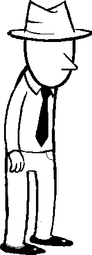
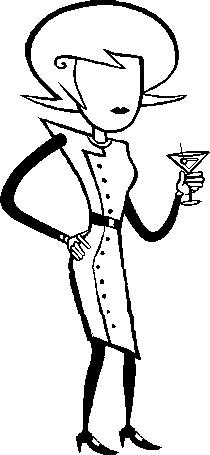
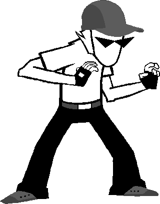
BRO
- Role
- Dave's guardian
Dave's older brother and guardian, a swordsman and puppeteer who trains him through rooftop strifes.
GRANDPA
- Role
- Jade's former guardian
Jade's late grandfather, an explorer and hunter whose taxidermied body remains in her home.
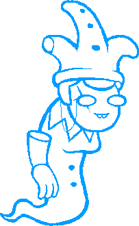
NANNASPRITE
- Role
- John's sprite
- Components
- Nanna + Harlequinsprite
John's deceased nanna, prototyped into his sprite to become his game guide.
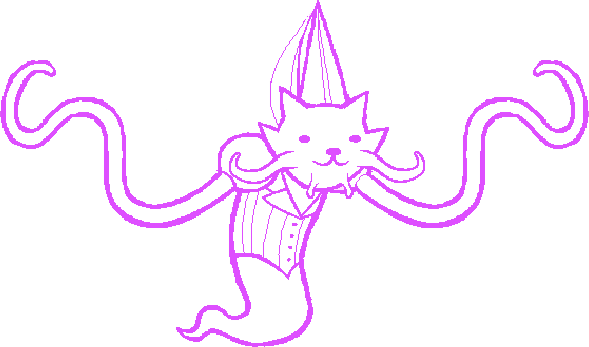
JASPERSPRITE
- Role
- Rose's sprite
- Components
- Jaspers + Eldritch princess doll
Rose's deceased cat, prototyped into her sprite along with an eldritch princess doll.
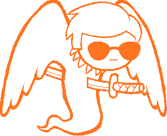
DAVESPRITE
- Role
- Dave's sprite
- Components
- Doomed-timeline Dave + Crowsprite
A Dave from a doomed timeline who travels back to warn John, then prototypes himself into Crowsprite.
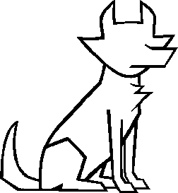
BECQUEREL
- Role
- Jade's guardian
Jade's dog, best friend, and Earth's FIRST GUARDIAN, with overwhelming space-warping power.
CARAPACIANS
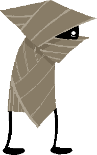
WAYWARD VAGABOND
- Formerly
- WARWEARY VILLEIN
- Abbreviation
- WV
A Dersite farmer turned exile who sends commands to John from future Earth and builds Can Town.
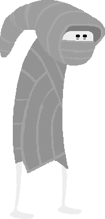
PEREGRINE MENDICANT
- Formerly
- PARCEL MISTRESS
- Abbreviation
- PM
A Prospitian mail carrier turned exile, determined to complete the delivery of Jade's package.
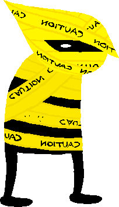
AIMLESS RENEGADE
- Formerly
- AUTHORITY REGULATOR
- Abbreviation
- AR
A Dersite officer turned exile who guards the frog ruins and sends commands to Dave.
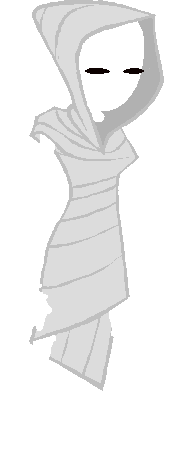
WINDSWEPT QUESTANT
- Formerly
- WHITE QUEEN
- Abbreviation
- WQ
Former ruler of Prospit. She abdicates, becomes an exile, and serves as Rose's future command voice.
JACK NOIR
- Role
- Human-session Dersite archagent
- Counterpart
- SPADES SLICK, troll session
The kids' session archagent. His troll-session counterpart is exiled and becomes Spades Slick of the Midnight Crew.
DRACONIAN DIGNITARY
- Role
- Human-session Dersite agent
- Counterpart
- DIAMONDS DROOG, troll session
A Dersite agent. His troll-session counterpart is exiled and becomes Diamonds Droog of the Midnight Crew.
COURTYARD DROLL
- Role
- Human-session Dersite agent
- Counterpart
- CLUBS DEUCE, troll session
A Dersite agent who steals the White Queen's ring. His troll-session counterpart becomes Clubs Deuce.
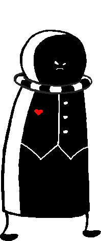
HEGEMONIC BRUTE
- Role
- Human-session Dersite agent
- Counterpart
- HEARTS BOXCARS, troll session
A very large Dersite agent. His troll-session counterpart becomes Hearts Boxcars.
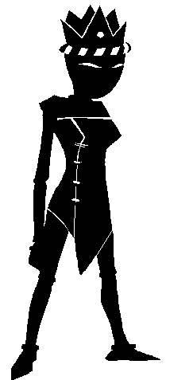
SNOWMAN
- Formerly
- Troll-session BLACK QUEEN
- Affiliation
- The Felt, number 8
The exiled Black Queen of the trolls' session, now the Felt's number 8. Her life is tied to something much larger.
OTHERS
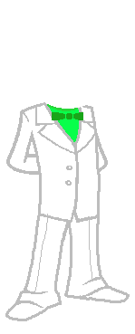
DOC SCRATCH
- Role
- Alternia's FIRST GUARDIAN
Polite, omniscient-seeming, and deeply manipulative. Closely associated with the Felt.
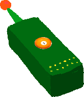
LORD ENGLISH
- Role
- The Felt's unseen boss
The Felt's unseen master, whose arrival Doc Scratch is working to bring about.
TROLL CHEAT SHEET
HEMOSPECTRUM
Blood color determines caste. Rust is low. Fuchsia is highest. Karkat's candy red blood is a mutation outside the normal spectrum.
LUSUS
An animal guardian who raises a young troll in place of parents. Plural: LUSII.
TROLLIAN
The trolls' chat client. It can contact people at different points in their personal timelines.
FLARP
Extreme live-action roleplaying. Tavros, Vriska, Aradia, and Terezi's old campaign produced several lasting injuries.
GAME CHEAT SHEET
SBURB / SGRUB
The human and troll versions of the same reality-altering game.
INCIPISPHERE
The game cosmos: Skaia, Prospit, the player lands, the Veil, and Derse.
PROTOTYPING
Prototyping a kernelsprite before a player enters also changes the session's enemies and royalty.
ECTOBIOLOGY
Paradox cloning across time. Both sessions involve players helping cause their own births.
RECKONING
The meteor assault from the Veil. Skaia redirects the meteors through portals into the players' home world's history.
DOOMED TIMELINE
An alternate branch that cannot sustain the main causal loop, even though its players can still act before it collapses.